The Turtle's Whisper
My love for turtles, a passion I shared with my father since childhood, was the invisible force propelling me forward. Since attending the University of Virginia, I had been trying to spot an Eastern Box Turtle in its native habitat—a goal that now seemed within reach.
The journey began at 8 a.m., and we trudged through woods, over streams, and across meadows, eyes peeled for any signs of turtle life. By 1 p.m., spirits were starting to wane. The adventure seemed fruitless, and we reluctantly decided to head back to the parking lot, wrapping up what felt like a failed expedition.
Just as we were about to abandon all hope, a distant rustle from the underbrush caught my attention. Though squirrels had been frequent culprits of such noises, something was different this time—the bushes stopped shaking. A silent agreement passed between us: This was no squirrel.
We approached cautiously, the air thick with anticipation. And there it was: an Eastern Box Turtle, its ornate shell glistening in the dappled sunlight, as if waiting just for us.
The moment was surreal. Hours of walking, years of dreaming, and a lifetime of loving these remarkable creatures had led to this single, unforgettable encounter. As I stood there, taking in every detail, I felt an overwhelming sense of gratitude. The long walk had not been in vain; it was a walk to discovery, a journey to fulfilling a dream.
Extending a special thanks to Mace Browning. Her past encounters with this incredible species led us to this spot, and her driving took us on this unforgettable journey. Because of her, this story became possible, adding another beautiful chapter to my lifelong passion for these marvelous creatures.
 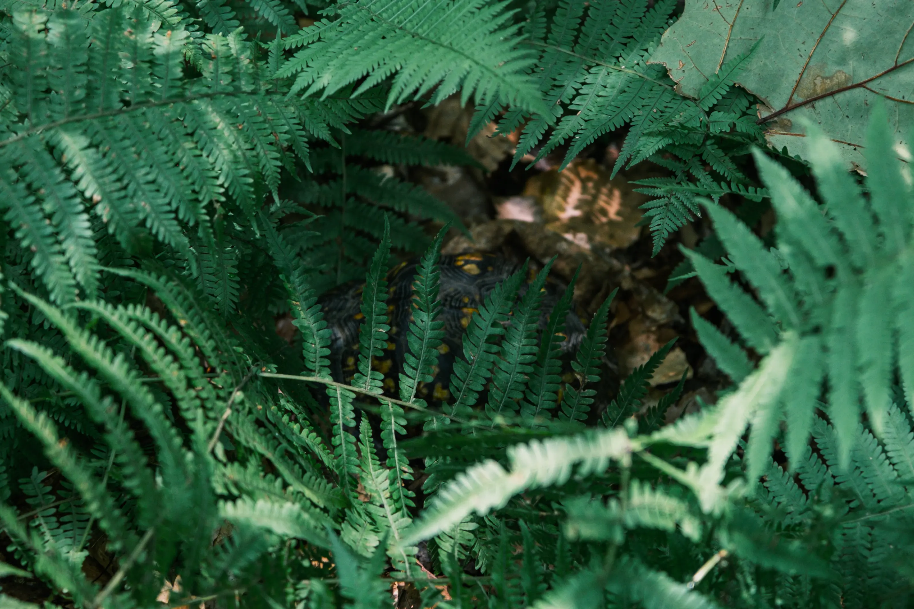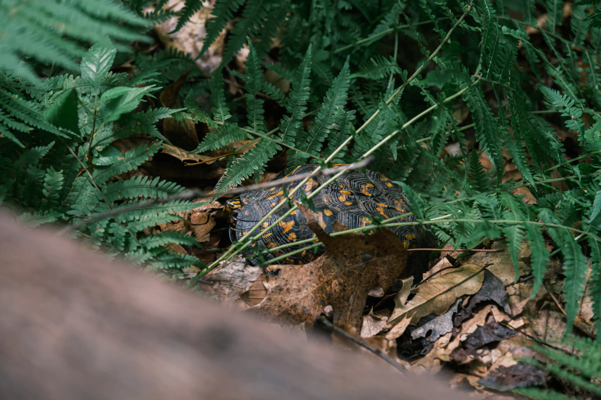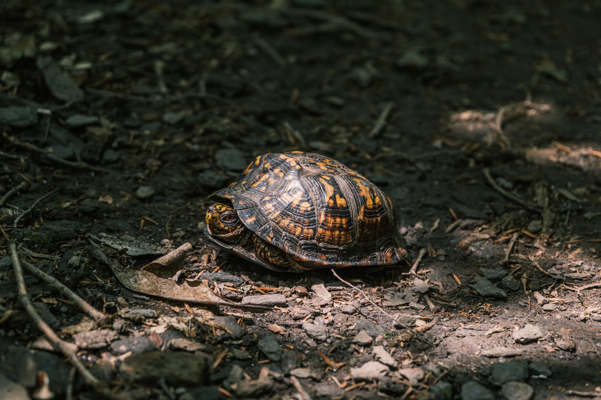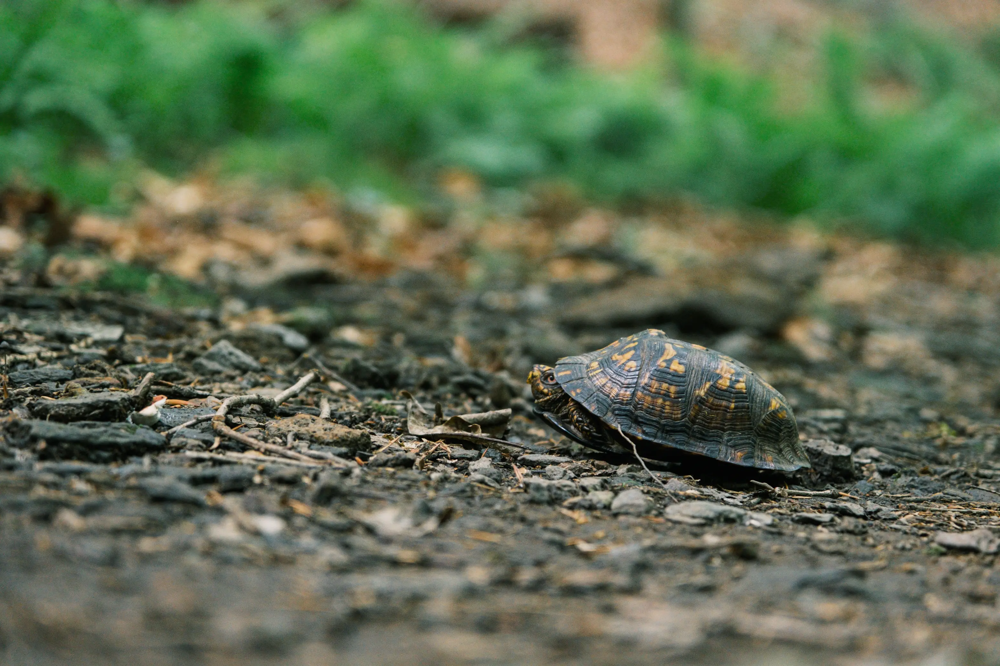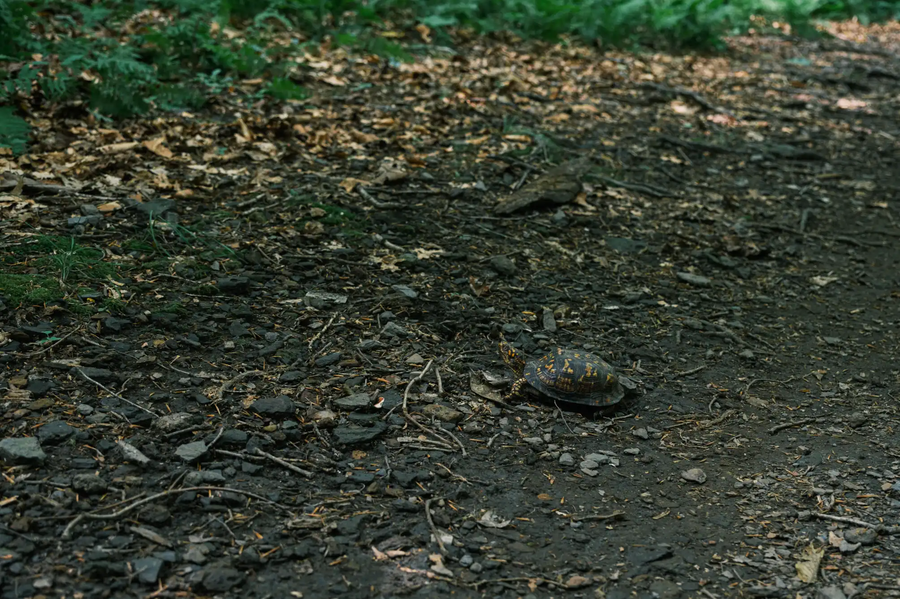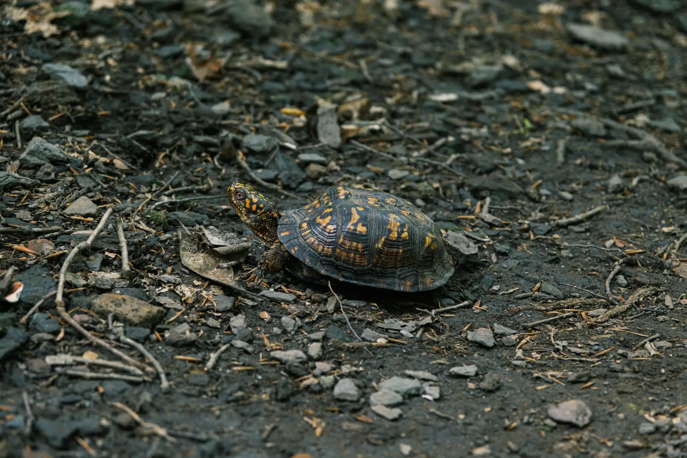
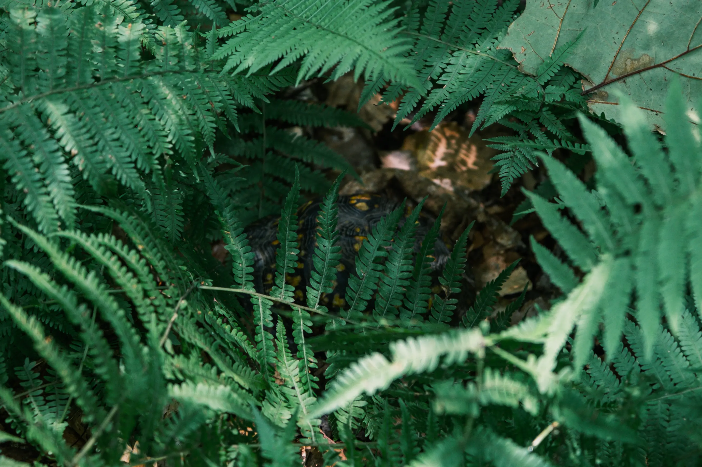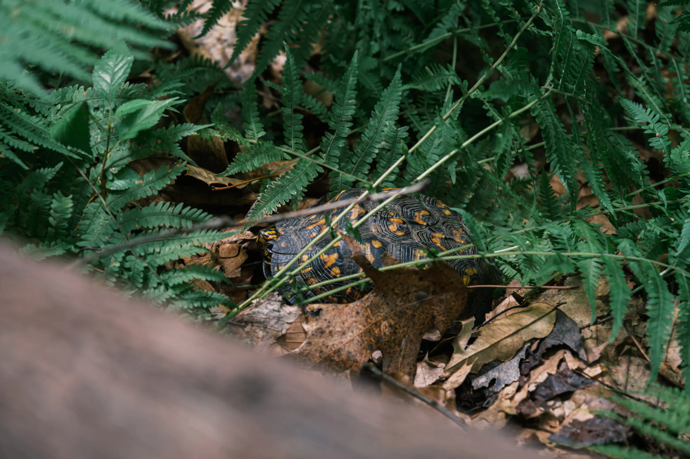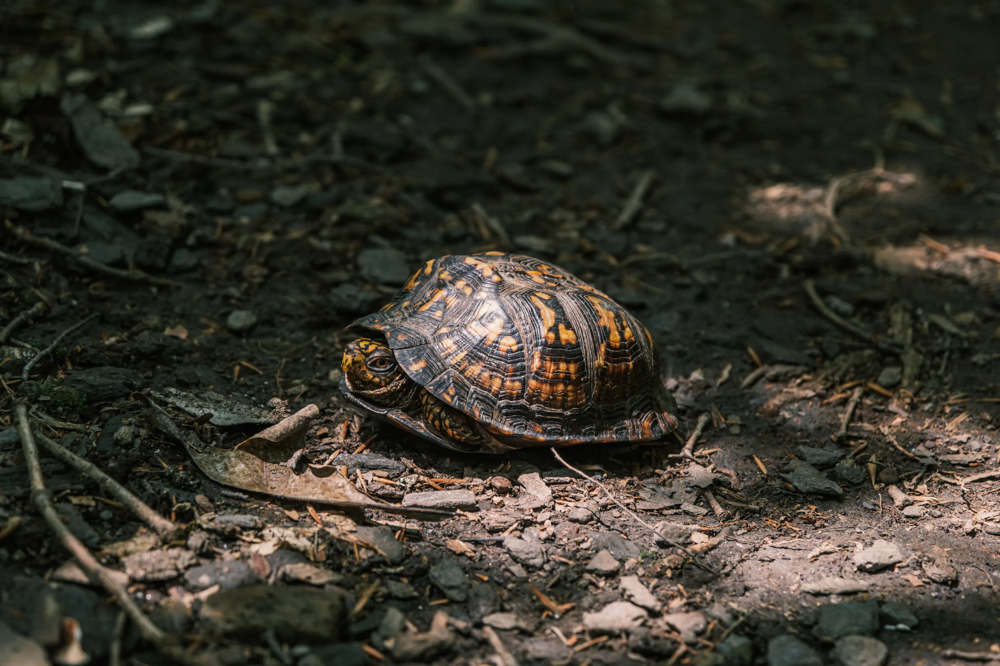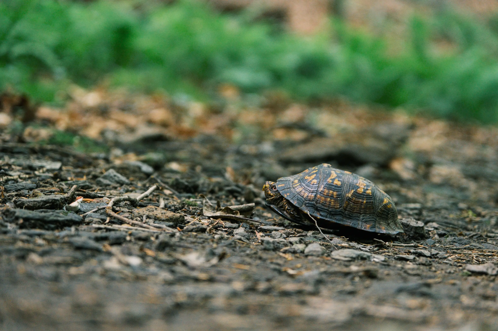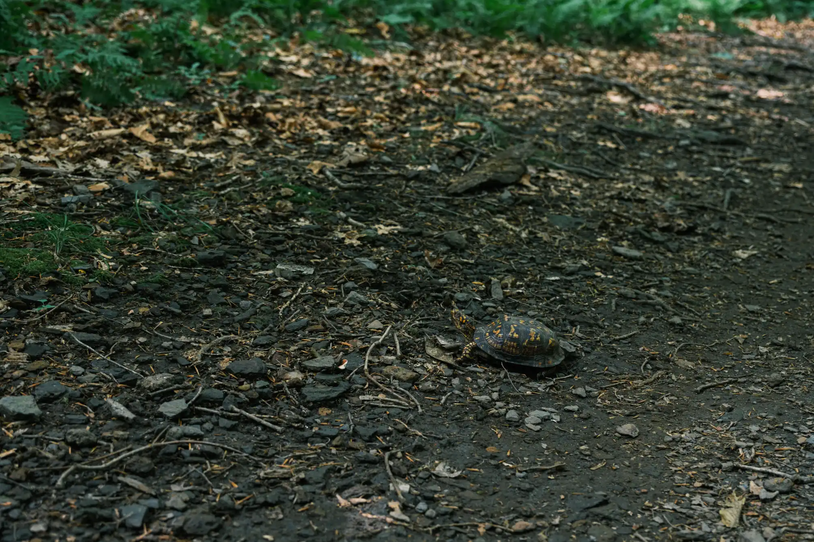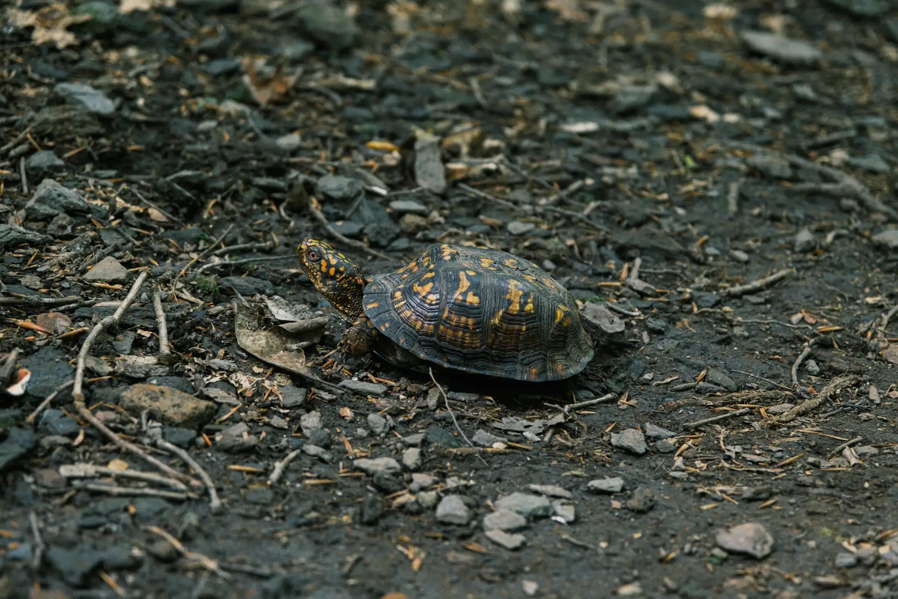